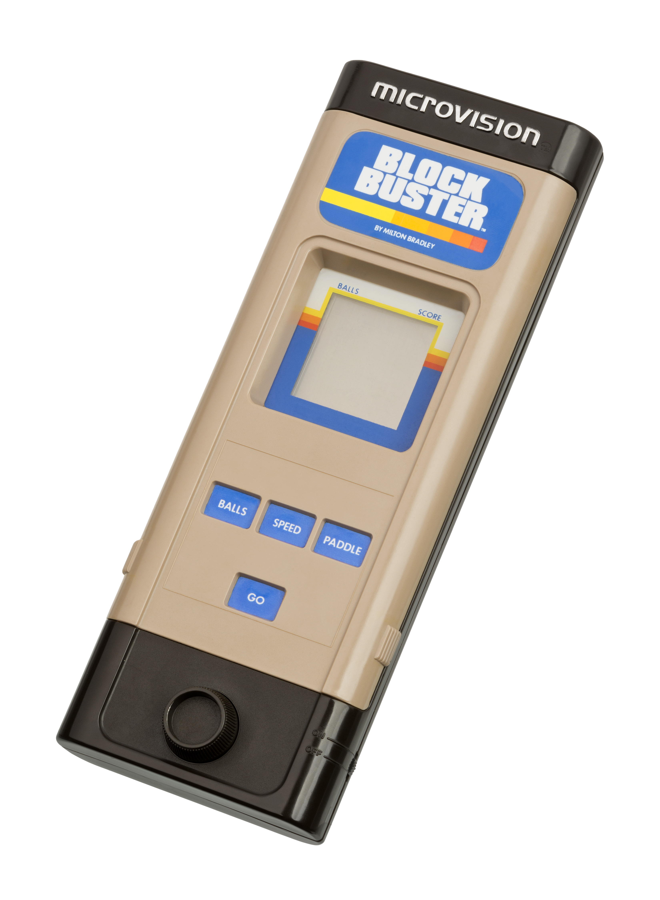
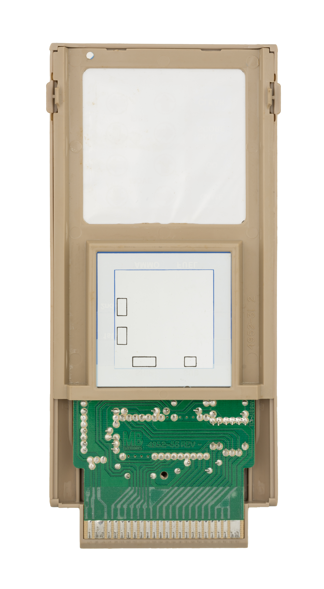
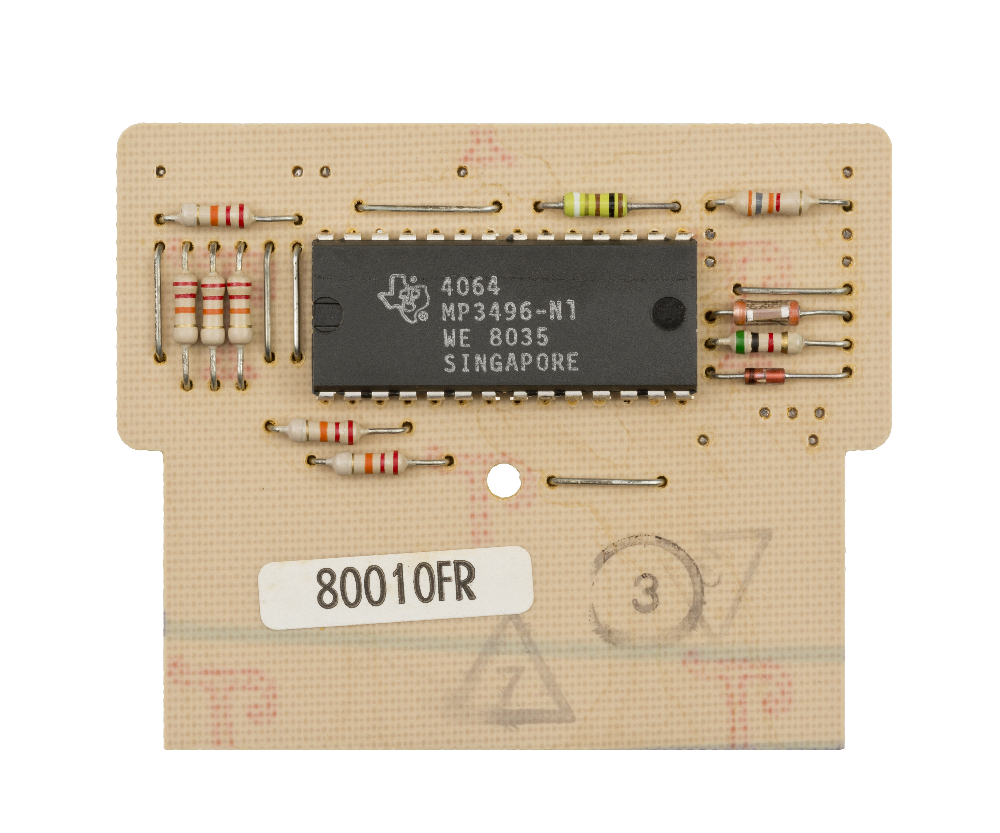

Milton Bradley Microvision
The first cartridge handheld — a console with no CPU, where every game is a different computer

Overview
The Microvision (aka Milton Bradley Microvision or MB Microvision), released in November 1979 at US$49.99, is the first handheld game console that used interchangeable ROM cartridges. Unlike most later consoles, it contained no onboard processor: each game cartridge carried its own CPU — an Intel 8021 or a Texas Instruments TMS1100 — with the game code in masked ROM inside the processor. The console itself was effectively just the controls, a 16x16-pixel LCD panel, and an LCD controller chip made by Hughes.
The input layout is the remarkable part. A twelve-button keypad sits under a thick layer of flexible plastic, with the switches hidden beneath. Each cartridge has cutouts in its bottom that align over the keypad, and printed plastic overlays relabel the buttons for that game; the player presses through the cartridge to reach the hidden switches. A rotary analog paddle provides continuous input for games like Block Buster, where it sweeps the bat, and Star Trek: Phaser Strike, where it aims.
The Microvision was designed by Jay Smith, who later designed the Vectrex. Smith Engineering grossed $15 million in the first year. It was discontinued in 1981 after a small library of twelve games. Satoru Okada, former head of Nintendo's R&D1, credited the Microvision with inspiring the Game Boy — Nintendo designed around its limitations.
Deep dive
There is no CPU in the Microvision unit. Each game cartridge contains its own processor — an Intel 8021 (cross-licensed by Signetics) or a Texas Instruments TMS1100 — running at 100 kHz, with 64 bytes of RAM and 2K of ROM integrated into the chip. Plugging in a cartridge is literally plugging in a different computer. Milton Bradley later switched entirely to the TMS1100 and reprogrammed the 8021 games.
The twelve-button keypad sits buried under thick flexible plastic. Each game cartridge has cutouts in its bottom aligned over the keypad, and a thin printed plastic overlay labels the buttons' functions. The player presses through the overlay and cartridge to hit the hidden switches. The design stretched and tore the printed plastic over time. Many early games were also programmed to register keypresses on release rather than press, because the prototype keypad had tactile feedback the production keypad lacked — teaching users to press harder and tear faster.
Alongside the keypad, the Microvision carries a rotary analog paddle — a potentiometer dial providing continuous input. Combining a continuous rotary control with a discrete button grid on a 16x16 LCD was unusual for the era.
The Microvision suffered three famous failure modes: 'screen rot' (the primitive LCD sealing leaked and permanently darkened), ESD damage (the cartridge's unprotected CPU pins could be killed by an unnoticed static charge of a few dozen volts — engineer John Elder Robison described up to 60% of units returned as defective during the 1979 holiday season), and keypad destruction from the press-through overlay design. These failures shaped Nintendo's approach when building the Game Boy.
Satoru Okada of Nintendo R&D1 said Nintendo designed the Game Boy around the Microvision's limitations — its small screen, fragile keypad, and cartridge carrying its own processor. The Microvision is the hinge between single-game handhelds like Auto Race and the cartridge-based handhelds that followed.
Team & pioneers
- Jay Smith. Designed the Microvision at Smith Engineering; later designed the Vectrex console.
- Milton Bradley Company. Manufacturer and publisher; released the Microvision in November 1979 at US$49.99.
- John Elder Robison. Milton Bradley engineer who redesigned later Microvision units to reduce ESD failures; documented the 1979 return rate in his memoir Look Me in the Eye.
Media

